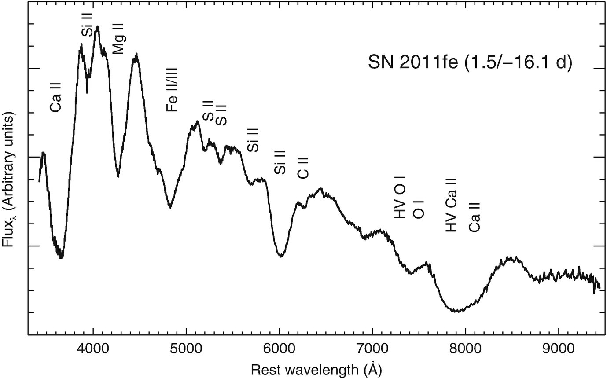
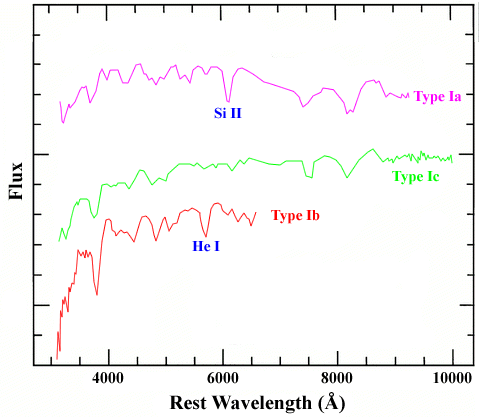
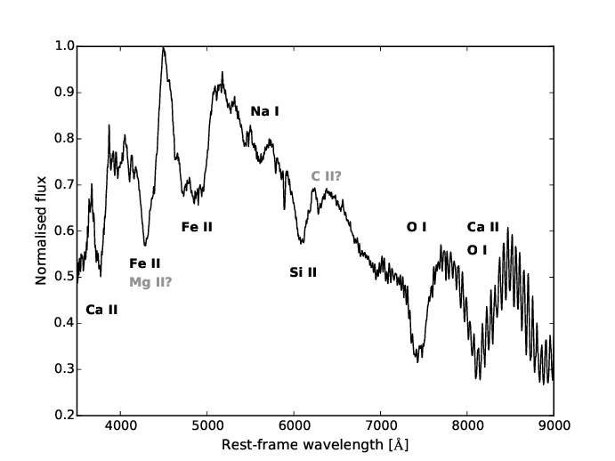
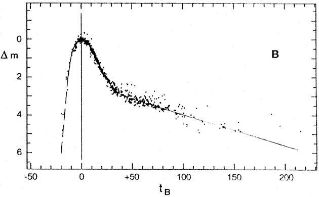
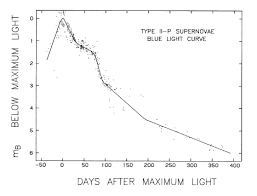

Supernovae mark the flaring end of the most gigantic stars out there in the cosmos. Known for their sheer brightness screaming through space-time, these explosions mark themselves as ideal ‘candles’ for measuring farthest galaxies. Just like with stars, galaxies, and quasars, astronomers have classified supernovae based on how their spectrum looks like. But before we dive into the classifications, we need to be clear of the following two terms:
Magnitude scaling is a system of calibrating the brightness of stars based on our reference frame. The system roots all the way back to the Greek astronomer Hipparchus and its mathematical foundation owes a debt to N.R. Pogson. A lower value in the magnitude scale indicates a brighter object whereas a higher value indicates a fainter source. The difference between one magnitude to the other is rather exponential. That is, the magnitude value = 3 is 2.5 times fainter than magnitude=2. Again magnitude 4 is 2.5 times fainter than magnitude 3. So, magnitude 4 is 2.5 x 2.5 = 6.25 times fainter than magnitude 2. If the scale was linear, the difference would have only been 2. For a broader understanding of the scaling method, see the following resources:
A Spectrum plot of a source (star/galaxy) is a plot where the x-axis is the wavelength of light (usually in nanometers or Angstroms) and the y-axis represents the Flux received from the source in that particular wavelength. Watch figure 1 for the details. The usual dips in spectrum plots represent absorption in that particular wavelength from the source while the peaks in the plot represent emission for that wavelength. These peaks and dips occur due to the presence of certain elements in the source. Therefore, the higher the flux from a particular wavelength the higher the abundance of the element belonging to that wavelength.
For a better understanding of spectrum plots, look into these resources:
Stellar Spectroscopy - what canFig 1 : A typical spectrum.
Now that we know what magnitude scales and spectrum plots are, we are ready to dive into Supernovae classification!
Based on the presence/absence of Hydrogen emission lines in a supernova spectrum plot, supernovae are divided into 2 types:
The Type I supernovae can be classified further based on the presence/ absence of silicon lines in the spectra. Supernovae with a strong presence of silicon lines are termed Type Ia supernovae. Explosions with an absence of Si lines can further be classified into 2 categories: Type Ib are those supernovae where there are signatures of Helium lines while Type Ic is the explosions without the presence of He lines.
The spectra of a typical Type Ia, Type Ib, Type Ic supernovae are shown below:
Fig 2: A typical Type Ia Supernova Spectrum.
Fig 3: Spectra of Type Ia, Ib, Ic Supernova.
Fig 4: Spectra of Type Ic Supernova.
Interestingly enough these spectral differences between Type Ia, Ib, Ic lie in their origins and the galaxies they inhabit. Type Ia supernovae occur in all types of galaxies, including elliptical galaxies that show comparatively low star formation. However, Type Ib and Type Ic supernovae are found only in active star-forming regions in spiral galaxies, especially in regions with an abundance of H II. This hints that Type Ib and Ic explosions occur due to the collapse of extremely high mass stars, stars whose hydrogen envelope has been long wiped away, and helium as well in the case of Type Ics. Type Ia supernovae, in general, occurs in close Binary systems where matter from one star starts spilling over the companion White Dwarf. The white dwarf keeps on increasing in mass until it reaches a certain limit of 1.44 solar masses. It then blows itself off in a cascading type Ia supernova, leaving behind a neutron star or a black hole.
For a detailed understanding of the type I supernovae and the formation of type Ia explosions, do check the following resources:
Generally, stars undergoing a Type-II supernova are seen to rapidly increase in luminosity and reach a maximum brightness that is 1.5 magnitudes dimmer than a Type Ia supernova. The peak magnitude is followed by a steady decrease in luminosity. The spectra of such supernovae have characteristic hydrogen and other heavy element lines. P Cygni profile formation is common in Type II spectra which hints at a rapid expansion of gaseous substances due to the explosion.
Type II Supernovae occurs when stars of mass exceeding 8 solar masses reach the end of their lives. In such stars, hydrogen burns helium, helium to carbon by the Triple Alpha Process, carbon to oxygen and gradually to silicon. In each successive step the energy released by fusion gradually declines. And once the fusion process reaches Iron, energy is no longer produced, rather absorbed for each reaction. This, in a cataclysmic series of events, seizes the star of its energy production and gives up to its own gravity. The result is a violent explosion termed as a type II supernovae.
Once again, based on the light curves, type - II supernovae can be classified into Type II-P (plateau) and Type II-L (linear) supernovae. The prime difference is that in case of Type II-L supernovae, the decay of the nova after peak brightness is approximately linear while in case of Type- P, the decay stops for a while creating a plateau in the light curve. The figures below show the situations graphically :
 Figure 5: Lightcurve of Type II-L and Type II-P Supernovae.